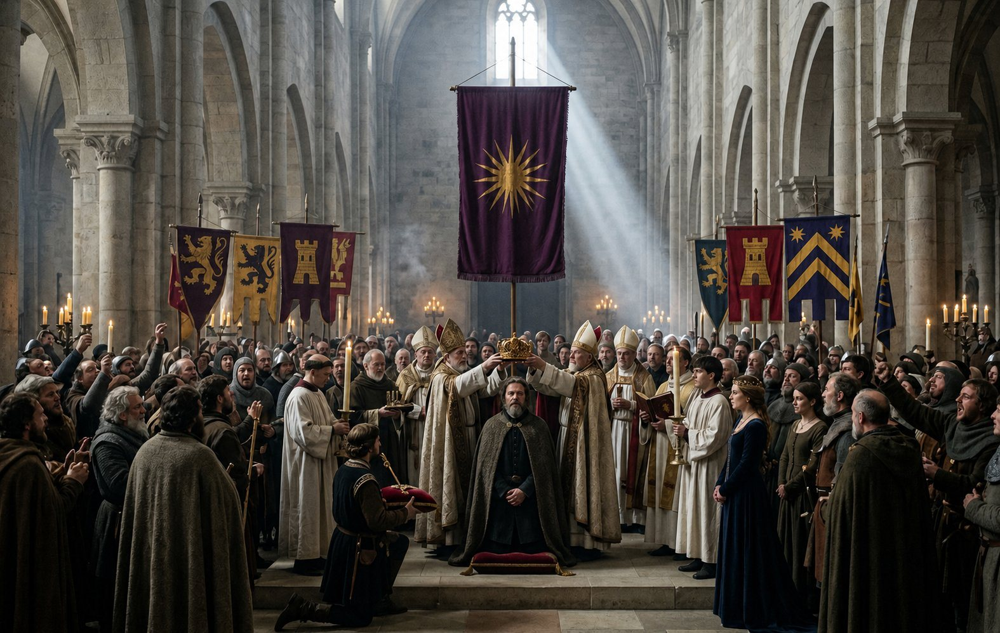
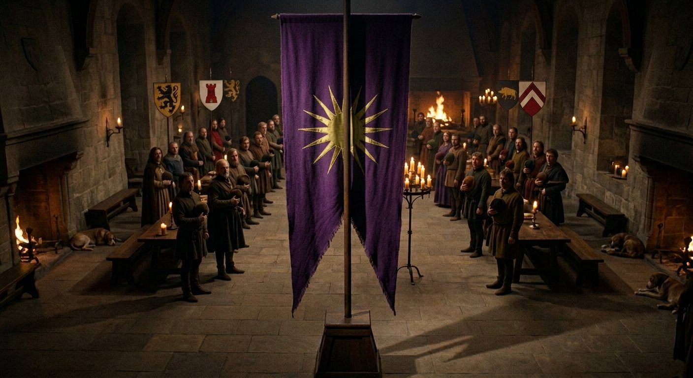
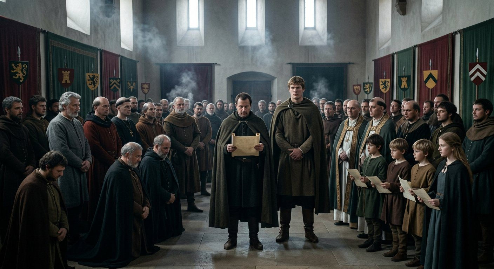
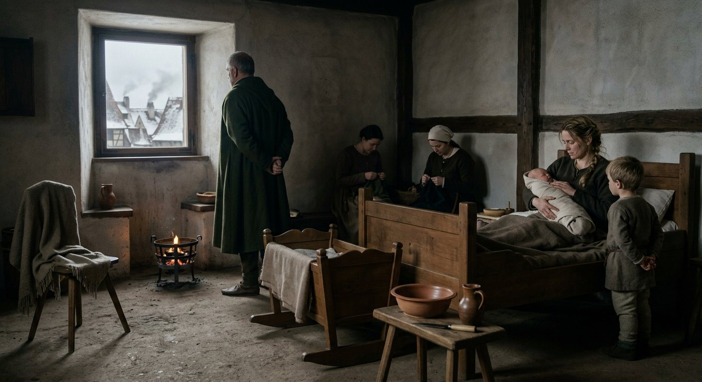
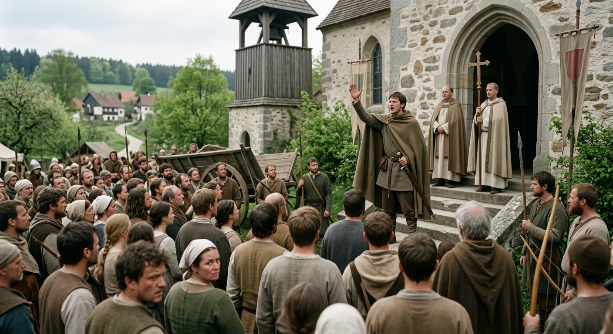
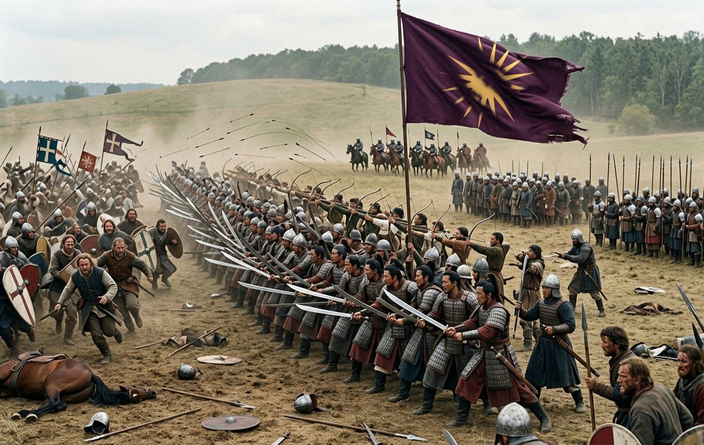
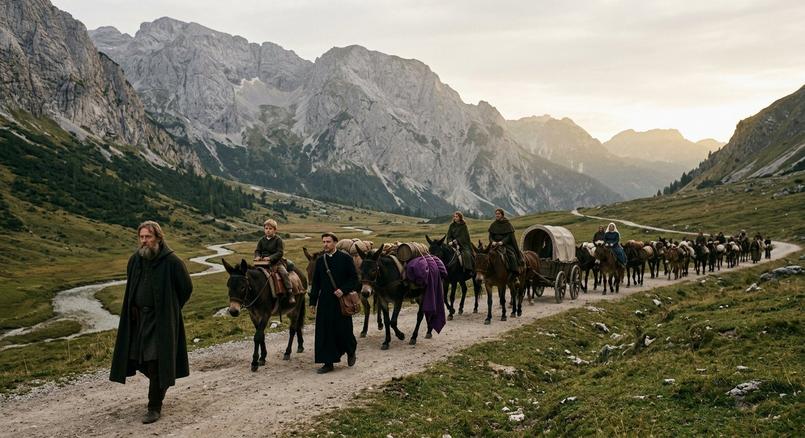
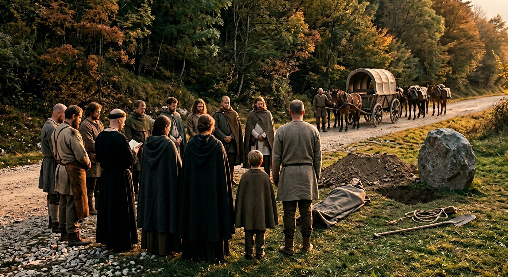
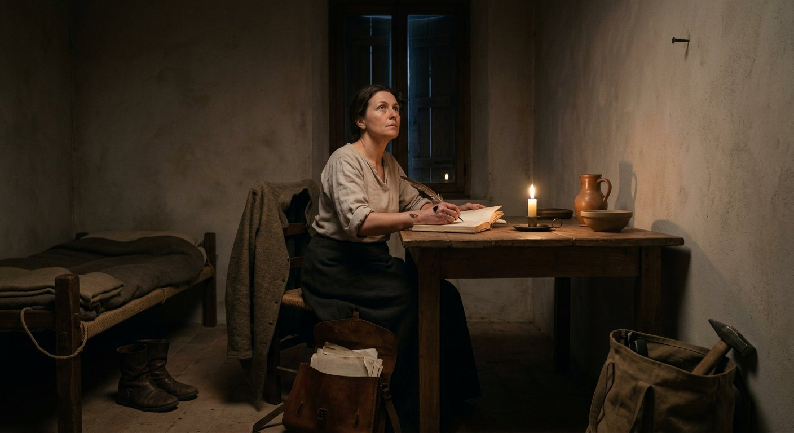

The hand that writes a king
The Greek gave me the book on the first day of the sixth month of 907 and he has not asked for it back, and I have asked him twice whether he wants it, and both times he said: no, and the second time he said it in the tone a man uses when he has already answered.
So this chapter is mine, from the first line, and I will say at the front what a reader is getting and what he is not.
I am Matako. I have been in this company since the tenth month of 879 — twenty-nine years in the tenth month of this one — and I shoe horses, mend mail, keep the tally of what the iron costs, and have kept the book since the day a clerk in a room with a ledger decided that a word had changed.
I do not read Latin. I read a muster roll, a bill of lading and a man's face, and I have written that sentence in this book before and will not write it again.
What a reader is not getting is a chronicle of a court. There are men in Regensburg now who can give you the order of a procession and the meaning of a colour, and one of them is a Roman Greek who has been ill about this since the summer, and another is a priest who has been at me for a month about the word *kingdom* in the front of the book. Let them write their own book. This one is a smith's, and a smith writes about what was made, what it cost, and which part of it will hold.
What I can promise is the arithmetic, and the names, and the things a man does with his hands when he thinks nobody is watching him, which in a hall is almost never and in a forge is most of the day.
I am going to begin with the crown because that is where the chapter is, and then I am going to do the thing that no chronicle of a coronation ever does, which is to give the account of what was happening in the yard while the hall was being splendid.
The coronation
The coronation at Regensburg ran from the twentieth day of the eighth month of 907 to the second month of 908, which is five and a half months, and I want the reader to stop on that number before he goes any further, because a coronation in a chronicle takes an afternoon.
Five and a half months of a king being seen to be a king. The record's own note on the whole affair is two words — *Impress Attendees* — which is the flat way the record has and which I have come to trust more than any poem: somebody in that winter decided that the work of the winter was not to govern Bavaria but to be watched governing it.
Regensburg filled up in the ninth month. It filled up the way a town fills for a fair, except that the fair lasts a week and this lasted a season: the lords of the country and their households, the bishops and their clerks, the men who had ridden three weeks to be seen in the same room as a man who had taken a kingdom off a king, and the usual enormous population of people who are nobody's and live on the edge of a great assembly.
We took the east quarter again. Forty regiments do not fit inside a wall and never have, and the whole army — three thousand one hundred men by the record, all of them present, which is a thing I want to say plainly and will come back to — was in cantonments outside the walls from the ninth month to the spring, and the forge was on stone by the twelfth day of the eighth month, and I banked my fire at dusk every day of that winter like any other.

The hall itself I went into four times in five months. I want to be exact about that, because there is a fashion now in Regensburg for saying that the smith of the company was at the king's right hand all that winter, and it is not true. I went in to fit a mail shirt that had a split rivet in the left armpit and had to be right by the twelfth month. I went in to measure a man's foot. I went in because Pramda sent for me about a hinge, of all the things in the world, and I went in on the day of the pledges in the eleventh month and stood at the back with the servants and the dogs.
What I saw from the back was this.
It was cold and it was enormous and it was full of cloth. The hall had been hung with cloth on every wall, and the cloth was purple, and there was not a device on any of it, because the kingdom had one device and it was on one pole and it was in the middle of the room.

That is the thing I would want a reader to take from this chapter if he takes nothing else. In thirty-five years as a company we had one standard, and it was carried in front of an army, and it meant a contract that would be honoured. In the winter of 907 that standard stood in a hall at Regensburg with two hundred lords of Bavaria in front of it and a king underneath it, and every one of those lords had a beast on his own banner, or a chevron, or a tower, or a lion with its tongue out, and not one of them could say what our sixteen rays meant, because they meant nothing. They never had. A device off a Macedonian tomb, drawn by a man who had never been taught heraldry, and carried for thirty-five years, and now it was the arms of a kingdom by right of having been the only thing in the room that everybody in it was afraid of.
Duke Rivai came in the tenth month. Prince László came. Pontifex Prijezda came on the third day of the eleventh month and was, in the record's phrase, an addition to the magnificence, which is a sentence I have read forty times and still cannot make into a man. Prijezda, who took Bereg off Domoszló in a wet field in 889, standing in a hall in a mitre.
They were not the old company by then. That is the part that took me a year to understand. Rivai had been a gray eminence in this company since 882 — twenty-five years of doing the work that a captain cannot be seen to do — and in the winter of 907 he came into a hall in Regensburg as a duke of Bavaria with his own household, and he bowed to a man he had known since before the crown, and the bow was correct and the man receiving it was correct, and I stood at the back with the dogs and thought: we have made a court, and it has made us into courtiers, and nobody asked us.
Pramda was consistently helpful, which the record says twice because it is the sort of small true thing a clerk puts down when he has nothing large to write. She is fifty-four. She came out of the north in 879 with the rest of us and has been the company's hands for twenty-eight years, and in that winter she was the person who knew where the salt was and which of the Bavarian households had not been given a room and who had to be seated away from whom, and the record calls it being helpful, and it was the government of Bavaria for five months.
On the twentieth day of the tenth month the king ate a Geisenhausian delicacy.
I am going to leave that sentence exactly as the record leaves it and not explain it, because I do not know what it was, and because it is in the record next to the three good omens and the pledges of loyalty and it is the only thing in the whole winter that tells me the man was happy. Somebody put a dish in front of him from a country he had been fighting in and it was a delicacy there and he ate it. That is all. I have watched him eat camp bread for twenty-nine years.
On the twenty-fourth day of the eleventh month, Queen Raina was impressed.
The record had been calling her the wife since 901 and it began calling her the Queen in that autumn, and on the twenty-fourth of the eleventh month it says she was impressed by the coronation, which is a small sentence about a woman standing in a cold hall for five months, and which I read as the most expensive thing in this chapter.
I have written a page in this book about the two mothers and I am not going to write about the family again. But I will put down what everybody in Regensburg knew and the record does not say: that a queen with one living son in the company and one son given a house at Mâcon and a third being carried in the east quarter, watching a hall full of Bavarian lords bow to her husband, is not a woman being impressed by cloth.
On the twenty-seventh day of the eleventh month the lords of Bavaria made their pledges of loyalty, and Athanasios led them.
Athanasios, who joined this company at Vidin in 887 as a boy with a bad chest and a good hand, stood up in front of the hall and led the pledges of a kingdom. Rivai and Ioakim of Pitten stood with him — Ioakim was twenty-three, a giant of a man, and had been in the country two years. And the record says the king reserved words of honour for the minority vassals, which means the widows' sons and the wards and the children whose fathers had died in the war, and which I take to be the whole of the man in one clause.
A foreign king, in his first winter, in front of the lords of a country that did not want him, spending his words of honour on the minors in the room. I asked him about it afterwards, in the forge, because he came down with a bridle that wanted a buckle. I said: the children. And he said: they are the ones who will remember who was kind to them when they were eleven.

On the twenty-second day of the twelfth month Vazul brawled with Chrysogonos.
Vazul is a Hungarian of the company, one of the horse, and he has been in it since 889 and has a temper that is famous in three languages. Chrysogonos is the Roman Greek who wrote the last two chapters of this book and who has been in the company since 879, and in the twelfth month of 907, in a hall in Regensburg, in front of a Bavarian court, the two of them had a fight.
I want to give the reader the shape of it because it is the whole of what a court does to an old company. It was not a duel. A duel would have been correct, with seconds and a priest and a space cleared. This was a brawl: two men of a company of hirelings, in a corner of a hall, over something that nobody wrote down, with the lords of Bavaria watching and pretending not to, and it was stopped in the ordinary way, by other men of the company, and the two of them were drinking together by the spring.
Chrysogonos, when I asked him, said: he was wrong about a horse. And I said: in a hall? And he said: he was wrong about a horse in a hall.
On the twenty-ninth day of the twelfth month Raina cajoled Duke Rivai.
That is the record's word and it is a good one. The Queen, in the last week of the year, in a room, talking a duke of Bavaria round — the duke, not some baron; Rivai, who had been the company's gray eminence and was now a great lord of the country and the king's oldest friend, and the record says he became the king's friend on the sixteenth day of the tenth month of that same autumn. She talked him round about something nobody wrote down, and I am not going to invent what, and I will say what I think it was: a house, a levy, a marriage, money, or whose son was to be given what. That is the list. It is always the list.
And on the thirteenth day of the twelfth month, in the middle of his own coronation, the King swore an oath of conquest.
That is the thing in this chapter that I would carve on a wall. A man who had spent thirty-five years being hired to win other men's wars, five months into being a king, with the crown not yet on his head in the way the Bavarians understood a crown, stood up in his own hall and swore that he would take more.
I did not hear it. I was not in the hall on the thirteenth. The record has it, and the record is a clerk's flat line, and I have thought about it for two years and I still cannot decide whether it was a promise to God, a promise to the lords in the room, or a promise to the company, and I have concluded that it was all three and that the man did not distinguish between them at the time.
The three omens
There were three good omens in that winter: the thirteenth day of the tenth month, the twenty-seventh of the same month, and the eighth day of the twelfth.
I do not know what they were. The record says *good omens* and does not say what was in the sky or on the stones, and I am not going to invent a comet, because a comet in a book is a lie that a reader will believe for three hundred years, and because I have been in eleven countries and I have seen what people do with a comet.
What I can tell the reader is what an omen is in a place like Regensburg in a winter like that. An omen is a piece of news that a great many people want. In a hall where a foreign king has two hundred Bavarian lords who have sworn to him and are not sure they meant it, every unusual thing in the sky, every calf with two heads, every old woman who dreams, is a thing that can be read usefully, and there are men in every court in Europe whose whole trade is reading it. Three good omens in one winter is not a sign from heaven. It is three occasions on which the same desire was satisfied.
But I will say this, and I say it as a smith and not as a priest: the man believed them. Not the way the court believed them — he was not a fool. He believed that the winter had gone well, and he took the three good omens as the record's way of saying so, and the day after the first of them, on the thirteenth day of the tenth month of 907, he called Raina his soulmate.
Same day. The first good omen and the word soulmate, and I do not think a chronicle ought to separate them, and I am not going to. Six years after a wedding at Beroe that began as a contract between a captain of fifty-one and a woman of twenty-eight, and two years after he had given her son a house at Mâcon and taken the child out of the roll, he called her what he called her, and the record wrote it down on the day of the good omen, and if that is not a man saying a thing out loud I do not know what is.
Three days after that, on the sixteenth, Rivai was his friend.
Conqueror
By the ninth month of 907 the record had a new word for him, and the word was Conqueror.
It does not say what he conquered. He had conquered nothing beyond one kingdom in the fifth month, and the record's word arrived in the autumn, in the middle of a coronation, before any of the wars that came after. So the word is about what he had done to a king and not about what he was going to do, which is the only reading that makes sense of the date, and I have put it in this chapter next to the oath of conquest because the two of them together are what Bavaria was afraid of.
Here is what the crown actually was, in the fourth month before the coronation began, and I give it in my own ledger and not the record's:
Fifteen thousand two hundred and twenty-four gold by the following year. Twenty-three thousand one hundred and nine of prestige, which is a number the record keeps and which I have never been able to spend. Forty-seven thousand eight hundred and forty-nine of piety, which is a number the record keeps about a man and which no living person has ever seen, and which I mention here once and will not mention again.
Forty regiments. Three thousand one hundred men, all present — and I want the reader to hold that against the earlier page of this book where one thousand eight hundred and seventy-three men went out of the army in a single day, because the difference between those two numbers is the whole of what a crown costs.
The queen
I have to write a section about the Queen and I am going to keep it short, because the record keeps it short, and because a smith writing about a queen is a smith writing about a thing she has only ever seen from the back of a room.
Raina was thirty-five in the first month of 908 and had been the wife since 901 and was the Queen from the autumn of 907. In the five and a half months of the coronation she was in that hall more than I was, standing where a queen stands, and the record's only sentence about her is that she was impressed, and I have already wrung that sentence for what it has.
What the record does not say and I can, because I was in the east quarter all winter, is what she did with the rest of it. She was the person the Bavarian women came to. There were two hundred households in Regensburg for a season and the wives and the widows and the daughters of them had nowhere to go and no rank that meant anything, and they went to the Queen's rooms, and the Queen's rooms had a fire in them and a woman in them who had been in a company for seven years and had seen what a cantonment looks like in February.
I carried a grate up those stairs twice. I am not going to make more of it than that. But a court is made in the rooms where the men are not, and the Queen's rooms in that winter were the only place in Regensburg where a Bavarian widow could sit down.
She did not go to Rome. I have written what I know about that in the last section and I will not repeat it, except to add the one thing I noticed and did not understand at the time: when we rode out of Regensburg on the eleventh day of the ninth month of 908, the Queen was at the gate with the household, and she said something to the King that took a while, and then she said something to Antiphates that took longer, and then she stood at the gate until we were out of sight, which the Queen of Bavaria did not have to do, in front of a great many people, in the rain.
The first son born to a king
On the twenty-third day of the first month of 908, Raina gave birth to a son, and he was called Euthykrates.
He was not the first son to this man. He was the fifth, and the third by Raina, and the third of the five to be born while his father held the title he held: Antiphates at Krassó to a captain with no country; Timostrate at Győr to a captain in a rented room; Chairestratos at Linz to a captain three months short of declaring a war; Lysistratos at Mâcon to a captain in the middle of a tournament.
Euthykrates was born to a king, in a capital, in a hall with a roof on it and a guard at the door, and I put the four of them in a row like that because that is how a family looks in a book with dates in it, and because the difference between the first child and this one is the whole of the chapter he is a son of.

I went to that birth and I want to say what I saw.
I was sent for because the woman who makes things in a place of death and birth is always sent for, and I brought a knife that I had made at the forge in the tenth month, which is a thing a smith does and not a thing a woman in a hall does. Raina was thirty-five. Antiphates was five and was in the way. There was a priest, there were two women, there was a brazier, there was a great deal of linen, and there was the King, who was fifty-eight in the second month of that year by my count, standing at the window with his hands behind him looking out at Regensburg for the whole of it, and not once at the bed.
I have thought about that a great deal and I am not going to make anything of it. Some men are in the way. Some men are not. He was not in the way, and when it was over he came and looked at the child and said a thing in Greek that I did not understand and will not translate badly, and then he went out to the yard where the horses were and had a long conversation with a groom about the farrier's bill.
That is what a king does in the hour after a son is born: he goes out and is told about the farrier's bill.
The old company
Now the other account of the winter, which is not in the record's column about the crown, and which I have kept in my own hand, and which is the reason I wanted the book.
They left. Not all at once and not in anger, and the record lists them flatly, and nobody in this company has ever put the list in a book.
Chrabroš went in the eleventh month of 907. Alexandra went in the first month of 908 — of 884, a hundred and ninety entries in the record, twenty-four years, one of the women who came into this company at Vidin and never once asked me for anything. Evanthia went in the fifth month of 908, with her son Antonios, and Evanthia was of the roll of 879, two hundred and seventeen entries, and had run the company's quarters in every winter since 884 and ran them better than I could. Zdenka in the eighth month. Dubravka in the ninth.
And Fedula died of old age in the fourth month, and Vladislav died on the road in the tenth, of a fall, which broke a great many of his bones, which were fragile, which he knew.
Two of those are mine to write and I am going to write them.
Evanthia was the reason a company of two thousand men could sit out a winter in a cantonment and not die. I have said in this book that the eleven hundred gold in a Roman winter was hers, and it was: the hay, the ground, the roofs, the prices, the fourteen men who drink and the two who steal. She left in the fifth month of 908 with a pension and a son of seventeen and a house two streets from the forge, and the record says *left* and does not say why, and I asked her because I am not a clerk and I do not have to be delicate, and she said: my son has a country now and I want him to have a street.
Alexandra I did not ask. She went in the first month, in the snow, with four horses and a cart, and she had been in the company since 884 and had a hundred and ninety entries and was one of the women on the roll, and she left in a month when nobody leaves, and the record says nothing, and I am going to leave it as the record leaves it. I have written this book for two years and I have learned one thing from the Greek: where the record is silent, a clerk who fills the silence has decided to be interesting at somebody else's expense.
And Vladislav, who died on the road in the tenth month with his fragile bones, was of the company twenty-one years and had a fall off a wagon. He was one of the men the King kept when the army was cut, because he could read and write three scripts, and he died not in a battle and not at Lengenfeld, but on a road in the Trentino, going to Rome with a king and a six-year-old boy.
The country
The coronation ended in the second month of 908 and what was left in the room afterwards was a country, and I am going to give the account of it that a smith gives, which is by what it was made of.
Bavaria in the spring of 908 was fifteen hundred churches, four bishoprics' worth of clerks, a great many small lords with a castle each and a grudge each, and a capital on a river with a stone bridge and a wall. It had a king who had taken it in a spring and a summer, who had never governed anything in his life except a company, and who had in his hand the one thing that no Bavarian ruler had owned since before the Magyars: an army that was paid.
That is the thing I want the reader to see, because the chronicles of kingdoms never say it. A feudal country is a country of men who serve for land and bring their own horses, and their king's problem is always the same problem, which is that his lords have the horses. A company is the opposite: the horses are the captain's and the men are paid coin, in a season, whether or not the harvest was good, whether or not the lord is sulking, whether or not there is a war.
For one year, at Regensburg, the two systems existed in the same city and one of them was plainly better, and every lord in Bavaria who came to the coronation could see it, and half of them wanted to be paid and the other half wanted the company gone. Both halves were dangerous and there is no way to govern the two together, and no one in that hall, in the winter of 907, worked out what to do about it, and in the fifth month of 908 the bill came.
The tolls came in. The mint came in. The bishops' rents came in. My ledger for the first half of 908 has three columns in it that it never had before — *Bavaria, grain*, *Bavaria, toll at the bridge*, *Bavaria, the Jews of Regensburg*, which last is a line a clerk in this company wrote and which I have kept because it is what a kingdom is made of and no poem about a coronation will ever mention it.
We were rich. That is the plain fact of the spring of 908. Fifteen thousand two hundred and twenty-four gold by the year's end and the chest was heavy enough that the wagons complained, and the army was forty regiments and full for the first time in its history, and the country was quiet, and the king was fifty-eight years old.
The rivals
The crown made enemies on the day it came, and I am going to set them in a row, because the record sets them in a row and because a reader is entitled to see how a kingdom spends its first year.
On the twenty-fifth day of the fifth month of 907, the day the war was won, two men became his rivals: Guerech of Léon, who was a sadist from the far west and a man who would have been hanged in any country with a working law; and Pilgrim of the house of the Aribonen, a zealot and a scholar of the church, in Bavaria, in the spring of the year in which the crown was six days old.
Guerech never came near us. He was five hundred miles away in a country of rain with his own quarrels and he is in this book because the record put him there on that day, and I have no more to say about him than that.
Pilgrim I have a great deal to say about and will say almost none of it, because the record gives him two words and no acts. He was a scholar of the church in the country we had taken, of a Bavarian house, and he was zealous, and within two years of the crown there was a populist rising in Bavaria under the name of Bavaria's own faith, raised by a man of twenty-seven with a good sword.
I am not going to say that Pilgrim raised it. The record does not say it and I do not know it and a smith who guesses at a bishop's politics is a fool with a hammer. What I will say is that in a country of fifteen hundred churches, the man who can explain to a village why the king's god is the wrong one does not need to raise anything. He only needs to be there, and learned, and certain, and to have been there before the king was.
And on the twenty-fourth day of the ninth month of 908, two weeks after we left for Rome, a peasant leader of twenty-six called Guntbald became the third.
Three rivals in fifteen months: a sadist, a scholar and a peasant. That is not a list of enemies; it is a description of everything a foreign king in a Christian country can be hated by, in the order in which it occurred to them.
Heilwich
On the eleventh day of the fifth month of 908 a man called Heilwich von Cham raised the Bavarian Chalcedonian Uprising, and the record's three words for him are *Populist Leader*, *Faithful Blade*, and twenty-seven years old.
I have thought a long time about how to write this, and I am going to write it plainly, and if it reads as an accusation then it is one.
In 887, in a chapel at Vidin, this company was converted. I have written about it in my own hand and I called it an act of paperwork then and I will not improve it now: a body of eleven nations with a Greek for a captain and a Macedonian faith, baptized in a chapel in the Danube country because a duke's war needed a company that could swear on the right book. Chrysogonos, who writes the book when I do not, has called the conversion the cheapest thing this company ever bought, and he is right, and it cost less than the four horses I shod that week.
And now the bill.
The record calls the rising Chalcedonian, which is to say: the country's own faith, the faith of the bishops who had sat in the coronation hall and been impressed, against a king who had been baptized in a chapel in the Danube country for reasons of contract, in a Greek rite that Bavaria did not have a word for, with a standard that had a sun on it instead of a cross.
It was not a rebellion of lords. That is the thing to understand. It was a populist revolt with a priest's language in it, and the man who raised it was twenty-seven and had a good sword and a grievance that was true.
The record does not say what Heilwich's specific grievance was, and I am not going to give him one. What is true is that there is no country on earth where a foreign king with a foreign god is not a grievance in itself, and the German country is a country with a great many churches in it, and by the summer of 908 there were Bavarian priests in the villages saying what a priest says when he is frightened and has a pulpit.

I want to put one thing beside that, because I have watched the man for twenty-nine years and this is my book.
He never once, in the summer of 908, said that he was not a foreigner.
His answer was not to explain his faith to the Bavarians. It was to raise the army — his army, forty regiments, the armored foot and the Ayrudzi and the Zhanmadao and the four hundred archers his own money had raised in Regensburg in 906 — and to march, and to fight, and to win, and to take the ringleader's theologian prisoner and put him in a room with a roof on it and food in it, which is what the record says and no more.
That is what this book has been about for eighteen chapters and it is worth saying in one sentence in the middle of the last of them: the argument of his life was never that he belonged. It was that he could win.
Hohenburg
On the eighth day of the sixth month of 908, at Hohenburg, the King commanded and won a battle, and the record has no numbers for it, and I am not going to invent any, for the same reason I gave about Lengenfeld: this history is proud of its numbers and will not spoil them with ones that do not exist.
What the record has is that the war was won the next day, and that he imprisoned a cleric and theologian called Lothar Elbow-High, born in 856, a small man with a hard faith, and that the country went quiet in the way a country goes quiet.

I did not see Hohenburg. I was at Regensburg with the forge and the horses and the youngest of the queen's sons, and what I know of it I have from men who came back, which is what any smith knows of any battle, and which is why I have written this chapter the way I have.
One thing I will put in from the men who came back, because three of them said it separately and they did not hear it from each other: there was a moment at Hohenburg when the Bavarian foot on the left would not stand, and the Zhanmadao crossed the field in front of them and formed a wall of their own bodies with their long swords in both hands, and the line held.
A company of Chinese swordsmen in the middle of Bavaria holding a line for a Greek king so that Bavarian infantry could find its nerve. I have been in this company twenty-nine years and that is the whole of it in one sentence, and there is no chronicle of Bavaria that will ever write it down.
The prisoners
The first is that the King went to that war himself. He was fifty-eight. He had a kingdom, a hall, a queen, five sons, an army of forty regiments and four men in the company who could command a wing better than he could. He went anyway, and he commanded, and the record says he won, and the men who came back said the same thing with more words.
The second is that he took prisoners and did not kill them. Lothar Elbow-High, a small man with a hard faith, who had told Bavaria that the king's god was an error, was taken at Hohenburg and put in a room at Regensburg with food in it and a guard at the door, and he was still in it when the record stops.
I have watched this man take prisoners for twenty-nine years and I have never once seen him enjoy it. Feodosia in irons for seven years; Ana in irons; Momchil the Brute in irons since the year Ana was murdered and still in the court in 908, which I have never understood and have written about in its place. He imprisons, and the record notes it flatly, twice a year, and no one is ever executed, and it is the strangest thing about him and nobody in eleven countries has ever noticed it.
A man who has killed perhaps twenty thousand men in the field and has never in his life put one to death in a room. I do not know what to do with that sentence. I am putting it in the book and leaving it.
Rome, and the road
On the twenty-fourth day of the ninth month of 908, Guntbald, twenty-six years old, a peasant leader, became the King's rival. That is the record's third rival in fifteen months, and I put it here so the reader can see the pattern: Heilwich's rising was not the last of it, and the country had discovered that a foreign king could be hurt by a man with a grievance and a crowd.
Two weeks before that, on the eleventh day of the ninth month, the King left Regensburg on a pilgrimage to Rome.

I went. I am writing this book on the road, in a room in a town in the Veneto, at a table with a candle, and I have never in my life written about a thing so close to me as this paragraph.
Eight of us left Regensburg. The record lists us and I will list us back: Pramda, who is the government of everything; Laurentios; Slavac; Eupraxia; Balc; Mudra, who is the mother of the second son and has been in the company since 902; me; and Antiphates, who was six years and five months old and is the eldest son and was on a mule.
The Queen did not go. Raina stayed at Regensburg.
I have thought about that more than about anything else in this chapter, and I have decided to write it as I saw it and not as a woman with a book might like to make it. She stayed. The record says she stayed and says nothing else, and the reasons a queen stays in a capital while a king goes to Rome for a season are: the country, a birth, an illness, a quarrel, or a child. The country had risen in the fifth month and was quiet in the way a country goes quiet; the fifth son had been born in the first month. That is all I know and it is not nothing, and I am not going to build a quarrel out of it because I have watched two people be careful with each other for seven years and it did not look like a quarrel.
We went by Kufstein and we were at Lonigo in the tenth month, and Rome was eleven weeks away, and on the sixth day of the tenth month Vladislav died on the road.

He fell. He was of the company twenty-one years and he could read three scripts and his bones were fragile and he was thrown from a wagon on a road in the Trentino, and he was buried in a town that I am not going to name because the men who buried him could not agree on what it was called.
We held a service. The priest said what the priest says. The King said *say the name* as he says at every grave, and eleven men said Vladislav, and Antiphates, six years old, said it too, because he was standing with the men and nobody had thought to move him.
That is the last thing that happened before this book's present moment, and I am going to write the next paragraph slowly.
Mudra, and the road
I have said that eight of us went to Rome and I have listed the eight, and there is one of them I have not written about in this book at all, and this is the last chapter and I am not going to leave her out of it.
Mudra came into the company at Krassó in the fourth month of 902, born 875, and the record's three words for her are *Beautiful*, *Chaste* and *Astute Intellectual*, which is the record's way and not mine. She is the mother of Timostrate, who is four, and who is at Regensburg, and she left her son at Regensburg to go on a pilgrimage to Rome in the ninth month of 908 with a king and seven other people, and the record does not say why and I did not ask her, because there is a kind of question a woman in a company does not ask another woman in a company.
What I will say is that she was the only person on that road who could read, apart from Pramda and the King, and that she read to Antiphates every evening for six weeks, and that the boy learned his letters on the Veneto road out of a book that had been copied in Regensburg in the winter and that had, I am fairly sure, been copied for him.
A king's heir, six years old, on a mule, in the rain, being taught to read by his father's concubine while his father walked in front of the column with his hands behind his back.
That is the picture of the road to Rome that I would put in this book if I could put only one, and I cannot draw, so I have put it in a sentence.
Lonigo, the twenty-seventh day of the tenth month
This is the last day in the record. I am writing on it, at a table, in a borrowed room, and a reader three hundred years from now will hold a book that stops in a town in the Veneto in the autumn of 908 because the record stops there, and not because anything ended.
Here is what this company is on the twenty-seventh day of the tenth month of the year of grace 908, and I give it as I have given every count in this book, in my own hand.
Forty regiments and three thousand one hundred men, all present — those at Regensburg under the lords, those in the Veneto on the road. Fifteen thousand two hundred and twenty-four gold in the chest, which is the most this company has ever held, and which is being spent at the rate of a king's household on a road with forty mules. Twenty-three thousand one hundred and nine of prestige, which is a number. A court of forty-eight at Regensburg, of whom four came out of the north in 879 and are alive: Pramda, Chrysogonos, Shiina the Noble, and me. Evanthia is alive but she is not in it any more; she is a woman with a street.
Five sons. Antiphates, six, here, on a mule, who can say *say the name* in Greek and understands it. Timostrate, four, at Regensburg with his mother. Chairestratos, two, given a house in the sixth month of 907 and out of the company. Lysistratos, twenty months, in the same house. Euthykrates, nine months, and a king's son.
A queen at Regensburg who was called a soulmate on the day of the first good omen.
One king on a road to Rome with eight people and a six-year-old heir, walking to the city where this book's second volume found him at a school desk in 893 with bad Latin and forty gold of his own money.

I have one thing to say before I put this pen down and it is not about Bavaria.
In the first month of 866 a boy of sixteen came out of a wreck on the coast of a country nobody in this book had named, with two hundred and six bars of iron and eleven men, and no country, and a Greek cloak over a Japanese robe, and he did not know a single one of the things that this book has spent eighteen chapters teaching him.
He is fifty-eight. He holds a kingdom, a queen, five sons, fifteen thousand gold, and an oath sworn in his own hall to take more. He has been called a trailblazer, a blademaster, a conqueror, and a king, and he has been tolerated in eleven countries, and the only title he ever gave himself was the one on a pole: sixteen rays of gold on purple, which means nothing, in the middle of a room full of lions.
Tomorrow we go on to Rome. The record stops here, so I stop here, and the book is not finished; it is only the last page that has been written.
*Here the third volume ends, on the road, in the hand of Matako of the company, who is fifty years old and has said her page.*